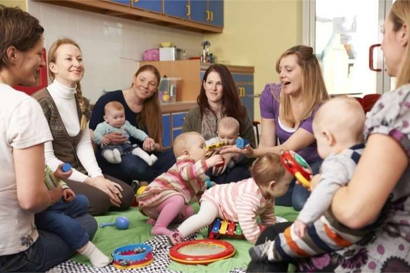
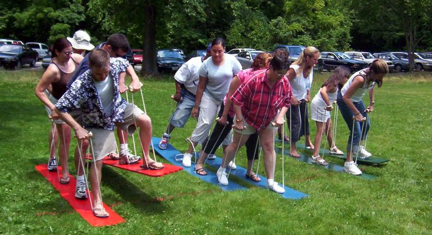
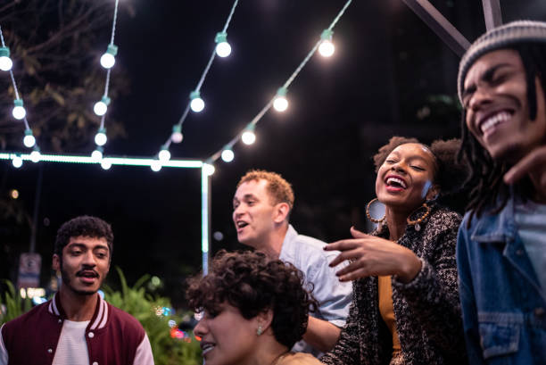

Life outside of your children
It's really important to have a social life outside of your children because it allows you to recharge and take care of yourself. As a mom, you devote so much time and energy to your kids, but it's equally important to prioritize your well-being. By having a social life, you can connect with friends, pursue your interests, and have some much-needed adult conversation. It helps to maintain a sense of identity outside of being a parent, which is crucial for your overall happiness and mental health.
Having a social life outside of your children, also benefits, your kids in the long run. It teaches them independence and resilience as a CU balancing your personal life and responsibilities. It also allows them to build relationships with people, other than their immediate family. So, by taking time for yourself, and nurturing your social connections, you're not only benefiting yourself but also creating a positive well-rounded environment for your children.
 |
 |
|  |  |